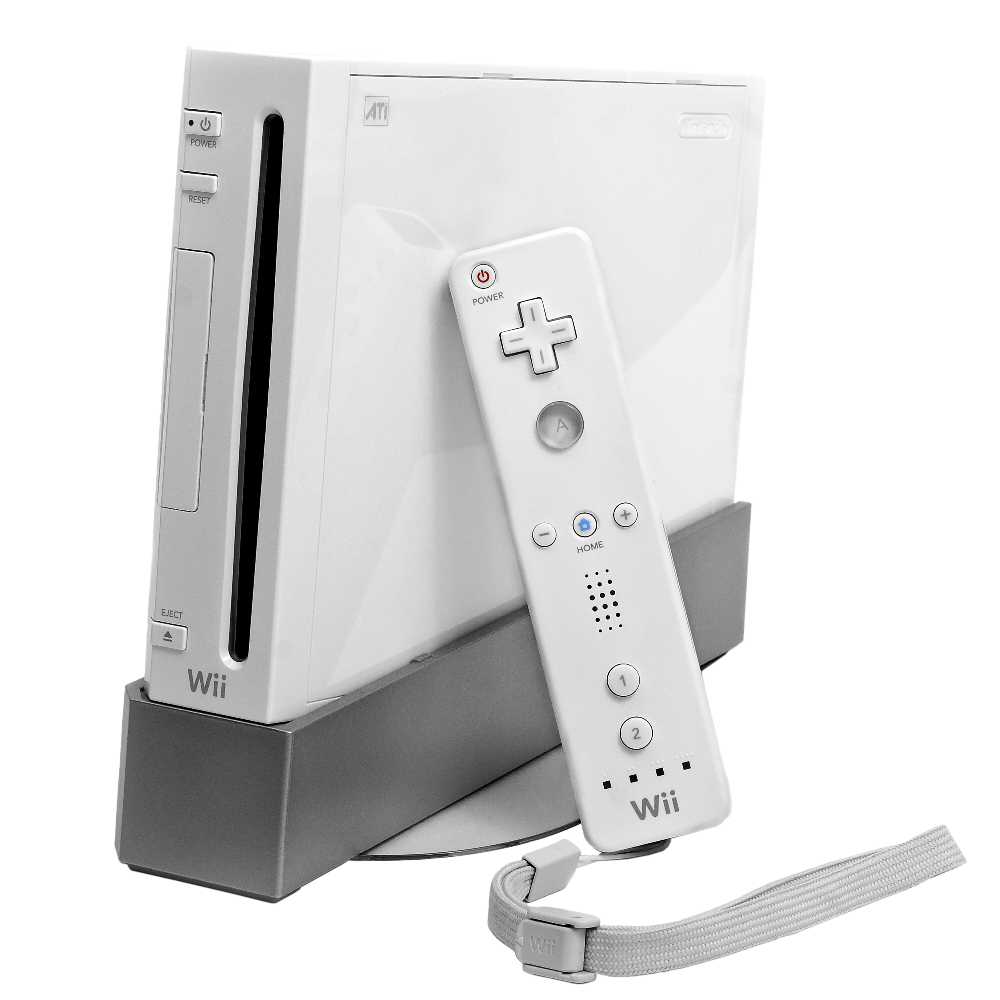

La Wii (ウィー, Wī?) est une console de jeux de salon produite par le fabricant japonais Nintendo entre 2006 et 2013. Elle fait partie de la septième génération de consoles, tout comme la Xbox 360 de Microsoft et la PlayStation 3 de Sony.
| Type | Console de Salon |
| Image |  |
| Prix | 150€ |